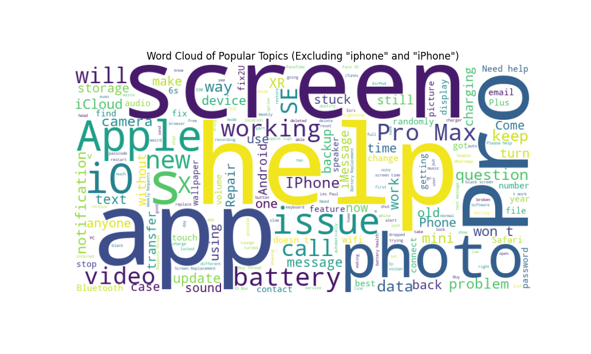
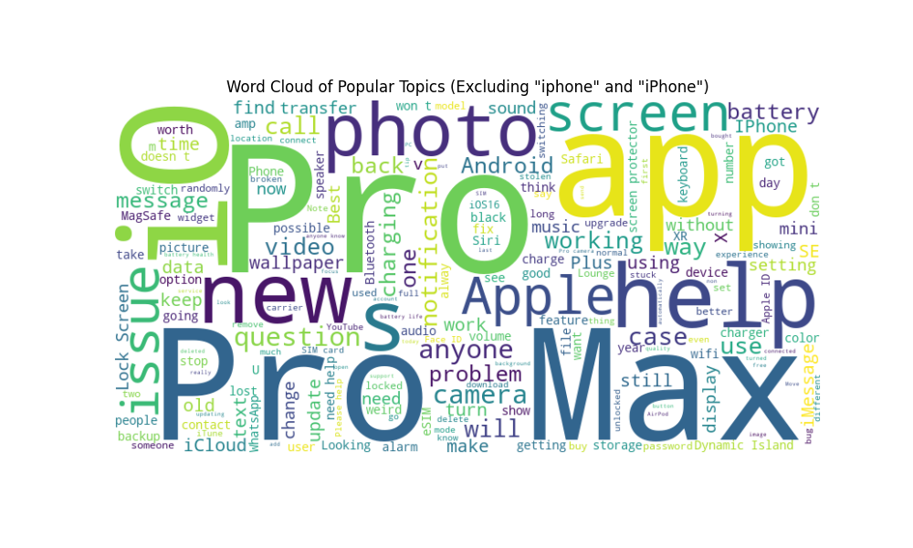

Reddit Community Dynamics and Influence Analysis (EDA)
Note:Link to the source code of EDA 1
Note:Link to the source code of EDA 2
Note:Link to the source code of EDA 3
Executive Summary
The exploration begins with a deep dive into the community dynamics and influence within Reddit. We aim to dissect the patterns that define user engagement and influence the discourse within Apple-centric subreddits. Our Reddit Impact Analysis sought to understand and identify elements with substantial influence across different communities. By employing metrics such as the number of comments, score, and discussion duration, we gained a nuanced understanding of content impact, ranging from instant popularity to lasting influence. These accomplishments collectively contribute to a more profound understanding of user engagement, community dynamics, and influential factors on the Reddit platform, aligning with our overarching goal of providing strategic insights for community enhancement and business decision-making.
Research on user activity in iphone community (EDA 1)
A Reminder for Our Business Goal:Conducting user activity research in the iphone subreddit is critical to understanding community dynamics, especially how important product launches like the iPhone 14 impact user engagement. This research benefits community managers, marketers, and product developers by revealing user interaction patterns and identifying key influencers. These insights can effectively inform marketing strategies, product development and customer engagement approaches.
Analysis:
Understanding user engagement in online communities, especially surrounding key events like product launches, is essential. This chart depicts the activity levels of iPhone subreddit users from March to July 2022, a period before the iPhone 14 release. It serves to illustrate the impact of such events on user behavior. By analyzing posting and commenting patterns quantified through a specific activity formula, we can observe the distribution of top contributors' engagement, providing actionable insights for community managers, marketers, and product developers as they strategize for post-launch activities.
This dynamic diagram is the top 15 users were active from March to July.
The selection of the top 15 most active contributors for analysis is based on the principles of the Pareto 80/20 rule[Referenced the information provided by AI], where a small number of contributors (in this case the top 15) are expected to account for activity and influence within the Reddit subreddit A large part of the force. This focused approach enables more manageable and targeted analysis, resulting in clearer patterns and actionable findings. From the figure we can see, except for two prominent contributors, the main contributors on the iPhone subreddit from March to July (that is, between the iPhone 13 and iPhone 14 release cycles) have a relatively even distribution of activity. This suggests that during the lull after the iPhone 13 launch and before the iPhone 14 launch, relatively balanced activity reflected a broader range of topics, with no single contributor dominating the narrative and a diverse community of discussions. And this kind of diversified participation helps determine users' interest in general iPhone products, helps readers and users obtain a wide range of suggestions, and also helps Apple to adopt opinions.
This dynamic diagram is the top 15 users were active from August to December.
After the iPhone 14 launch, the subreddit's contributor dynamics shifted significantly. First of all, the activity of active contributors has been greatly improved. Secondly, a very obvious "leader" has emerged. There are three contributors with very large contributions, and the other contributors are in a relatively balanced state. The presence of three highly active contributors may indicate that a small group of users drives most discussions. This change may result in a single discussion environment where specific topics or perspectives become more visible under the influence of these dominant voices. However, this centralized discussion mode helps readers and users find iPhone14 information more quickly and efficiently. It also helps Apple to grasp public opinion trends in a timely manner and adjust its market and product strategies.
Later, in order to understand whether the contributors in these two time periods overlapped and to explore the contributor pattern in the iPhone community, we marked the user names that were repeatedly listed in the two time periods.
| Author | Repeat Time | 3-7 Activity | 8-12 Activity |
|---|---|---|---|
| Simon_787 | 2 | 430 | 856 |
| Pantheon73 | 2 | 182 | 247 |
| JohnFlufin | 2 | 162 | 559 |
| 3dforlife | 2 | 102 | 123 |
| D_Empire412 | 2 | 112 | 180 |
| PJ09 | 1 | 243 | 0 |
| WahidUmmah4312 | 1 | 244 | 0 |
| katsumiblisk | 1 | 460 | 0 |
| zerbey | 1 | 245 | 0 |
| iphone14vn | 1 | 225 | 0 |
| Wallaceb3878 | 1 | 189 | 0 |
| keffordman | 1 | 116 | 0 |
| Allowmancer | 1 | 161 | 0 |
| NickyGi | 1 | 113 | 0 |
| iphone12case | 1 | 110 | 0 |
| dislikebuttonz | 1 | 0 | 716 |
| Golfswingfore24 | 1 | 0 | 191 |
| JaxTellerr | 1 | 0 | 147 |
| paulrudder | 1 | 0 | 123 |
| owtlowd | 1 | 0 | 115 |
| antdude | 1 | 0 | 112 |
| Administratr | 1 | 0 | 111 |
| abdallahzeid | 1 | 0 | 105 |
| lagiphone | 1 | 0 | 105 |
| pohatu771 | 1 | 0 | 104 |
This is a table of contributors in two time periods. A repeat value of 2 means that the user has been on the list twice.
We can see from the table that only 5 usernames were on the list during the window period before and after iphone14 was released; the other users only existed in a single list.
This shows that most of the contributors do not overlap. This shows that the same group of active contributors did not contribute content before and after the release of iPhone 14. The contributor pattern has changed dynamically. Obviously, the two groups of people have different interests in the iPhone.
We can infer that the release of iPhone 14 may have attracted users with more investment or interest in the new model, or there may have been many users who are not usually active, leading to changes in the contribution model.
Research on posts in iphone community (EDA 2)
A Reminder for Our Business Goal:Conduct An in-depth exploration of popular posts on the iPhone Reddit subreddit, designed to provide users, forum moderators, and technology companies with effective recommendations so that they can better serve the interests and needs of the community, and potentially influence future product discussions. and development.
Analysis:
After conducting an in-depth study of active contributors, and to gain a deeper understanding of the patterns of the iPhone community, we took an in-depth look at the posting patterns of the iPhone Reddit subreddit, aiming to provide useful insights for users, moderators, and technology companies.
The analysis focuses on two key periods in 2022, before and after the release of iPhone 14. The total number of posts is a very obvious sign. Changes in this number can easily explain the changes in community activity before and after the release of iPhone 14.
The table below shows the total number of posts before and after the release of iPhone 14:
| Time Period | Counts of Posts |
|---|---|
| March to June | 3313 |
| August to December | 10302 |
The number of posts increased significantly from 3,313 between March and June to 10,302 between August and December, indicating a significant surge in community engagement following the iPhone 14 launch. This sharp rise may be attributed to the increased discussion and interest generated by the new release. Showing that product launches play a key role in driving user activity within the iPhone subreddit.
After studying the insights brought by the total number of posts published, we can deeply explore the distribution of post scores and the number of comments to see what patterns exist in posts published during the two windows before and after the release of iPhone 14, that is their score and review count distribution.
This scatter plot is the distribution of scores and number of comments for all posts published in the iPhone community from March to July 2022. The abscissa is the score, the ordinate is the number of comments.
According to the observation on the scatter plot, the scores and number of comments of most posts are concentrated within 250 scores and 200 number of comments, and the origin has the most clustered points, which means that most posts do not score high and have fewer comments.
In addition, the distribution of post scores and number of comments shows a positive correlation trend, indicating that the two complement each other and achieve each other. That is, posts with higher post scores generally attract more comments, and vice versa.
There are very few outliers: for example, posts with very high scores but few comments, and posts with averages close to 400 but very low scores. For such abnormal posts, further analysis is needed to determine the reasons for their anomalies.
This scatter plot is the distribution of scores and number of comments for all posts published in the iPhone community from August to December 2022. The abscissa is the score, the ordinate is the number of comments.
According to the observation on the scatter chart, after the release of iPhone 14, the scores and number of comments of most posts are concentrated within 500 scores and 500 comments. Comparing the distribution chart of post scores and number of comments before the release of iPhone 14, it can be seen that the average number of posts The popularity has been significantly increased, which shows that the release of the new product iPhone14 has driven the activity of the community.
When studying the word cloud composition before and after the release of iPhone 14, we can quickly discover the most popular topics and trends in the iPhone subsection.
This is a word cloud generated based on the title of the post before iPhone 14 was released.
Highlighted words such as "battery", "issue", "photo", "data", "storage" and "camera" indicate that battery life, system issues, photo management, data security, storage space and camera quality are user concerns. There are no particularly prominent words about new product launches, indicating that user discussions have stabilized five months after the release of iPhone 13.
This is the word cloud generated based on the title of the post after iPhone14 was released.
During this period, the fonts such as "Pro", "Max", and "new" became larger, indicating the release of the iPhone 14 series and the increase in related discussions. The prominence of words such as "video", "wallpaper", "iMessage", and "charging" may indicate discussions of new features or problems users are encountering on new devices.
From the word cloud, we can find the most popular topics and trends in the "iPhone" subreddit, such as paying attention to battery life issues; storage management, choosing the mobile phone memory that best suits you; discussions about cameras, which can make users want to take pictures, and get good suggestions; in view of the frequent occurrence of words such as "issue" and "problem", users are advised to pay attention to check it to provide more useful purchasing suggestions.
Overall, these two word clouds provide a macro perspective, showing the core topics that users care about. For users, they can quickly obtain the focus of the iPhone community on new products based on the composition of the word cloud, quickly read and obtain useful information, and help provide purchasing suggestions. For community managers and content creators, understanding these trends can help develop a content strategy that is more aligned with user needs. For product development teams, user discussion points can serve as feedback to improve existing products or guide the development of future products.
Reddit Impact Analysis (EDA 3)
A Reminder for Our Business Goal: We aim to analyze the influence itself. Our primary goal in the Exploratory Data Analysis tasks is to understand and identify elements that hold significant influence or attract widespread attention across different communities. However, the question of what behaviors or outcomes can be deemed as having substantial impact remains to be explored. This is the topic we are about to delve into.
Analysis:
The above figure explores whether a post becomes instantly popular. We sorted the posts based on the number of comments and score. In cases where both the number of comments and score are higher, a shorter time_difference indicates a higher likelihood of the post becoming instantly popular. In other words, if a post receives a significant number of comments and scores in a short period, it may indicate that it has become instantly popular. Therefore, in our scatterplot results, a higher position, larger size, and a color closer to blue for the dots indicate that the post is more likely to become popular in the short term, exerting a significant influence in a brief period.
The above figure explores whether a post has persistent influence. We sorted the posts based on the time_difference. In cases where the time_difference is longer, a higher number of comments indicates a higher level of the post's sustained influence. In other words, we explore whether a post has a longer-lasting impact by tracking the timestamps of comments. Similarly, in our scatterplot results, a higher position, larger size, and a color closer to blue for the dots indicate that the post has a more persistent influence.
We think that to explore influence, it is not only necessary to examine whether a post attracts significant attention in a short period (instant popularity) but also crucial to assess the sustained coverage of influence for the post. For example, based on the results of the two plots above, the post "Do you trust Apple with their views on privacy? or do you think its all fake?" not only attracted a significant amount of attention in a short period but also maintained high attention over an extended duration. In other words, this post has a substantial and lasting influence.